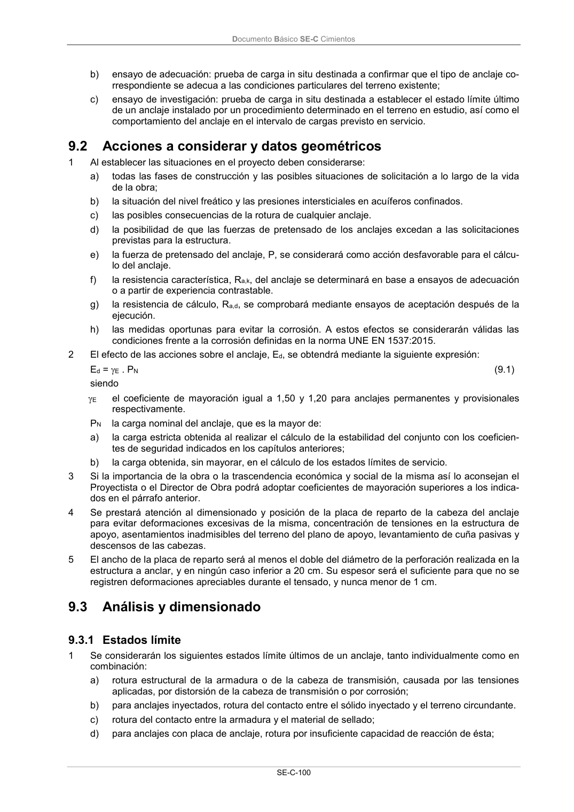

DB-SE-C · Acciones a considerar y datos geométricos · versión 2019-12-20 · capa oficial
Formatos: JSON compacto · Markdown · PDF fuente
Ámbito del documento · texto del ámbito · documento y tablas
ID técnico a0231 · PDF pág. 105 · jerarquía no validada por persona · contrastado con el literal de la página 105 (candidato tipográfico); no validado por persona · padre: raíz
Acciones a considerar y datos geométricos 1 Al establecer las situaciones en el proyecto deben considerarse: a) todas las fases de construcción y las posibles situaciones de solicitación a lo largo de la vida de la obra; b) la situación del nivel freático y las presiones intersticiales en acuíferos confinados. c) las posibles consecuencias de la rotura de cualquier anclaje. d) la posibilidad de que las fuerzas de pretensado de los anclajes excedan a las solicitaciones previstas para la estructura. e) la fuerza de pretensado del anclaje, P, se considerará como acción desfavorable para el cálcu- lo del anclaje. f) la resistencia característica, Ra,k, del anclaje se determinará en base a ensayos de adecuación o a partir de experiencia contrastable. g) la resistencia de cálculo, Ra,d, se comprobará mediante ensayos de aceptación después de la ejecución. h) las medidas oportunas para evitar la corrosión. A estos efectos se considerarán válidas las condiciones frente a la corrosión definidas en la norma UNE EN 1537:2015. 2 El efecto de las acciones sobre el anclaje, Ed, se obtendrá mediante la siguiente expresión: Ed = E . PN (9.1) siendo E el coeficiente de mayoración igual a 1,50 y 1,20 para anclajes permanentes y provisionales respectivamente. PN la carga nominal del anclaje, que es la mayor de: a) la carga estricta obtenida al realizar el cálculo de la estabilidad del conjunto con los coeficien- tes de seguridad indicados en los capítulos anteriores; b) la carga obtenida, sin mayorar, en el cálculo de los estados límites de servicio. 3 Si la importancia de la obra o la trascendencia económica y social de la misma así lo aconsejan el Proyectista o el Director de Obra podrá adoptar coeficientes de mayoración superiores a los indica- dos en el párrafo anterior. 4 Se prestará atención al dimensionado y posición de la placa de reparto de la cabeza del anclaje para evitar deformaciones excesivas de la misma, concentración de tensiones en la estructura de apoyo, asentamientos inadmisibles del terreno del plano de apoyo, levantamiento de cuña pasivas y descensos de las cabezas. 5 El ancho de la placa de reparto será al menos el doble del diámetro de la perforación realizada en la estructura a anclar, y en ningún caso inferior a 20 cm. Su espesor será el suficiente para que no se registren deformaciones apreciables durante el tensado, y nunca menor de 1 cm. 9.3

PDF fuente redistribuible: copia fiel enlazada en esta página (SHA256 verificado).